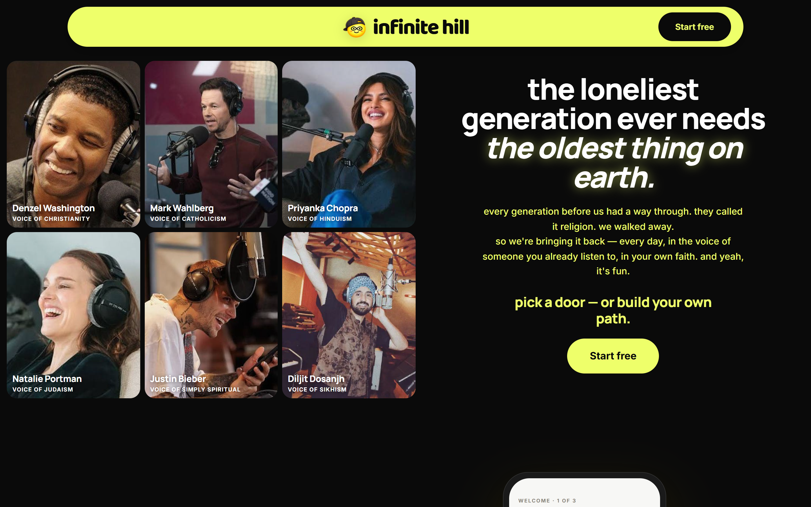
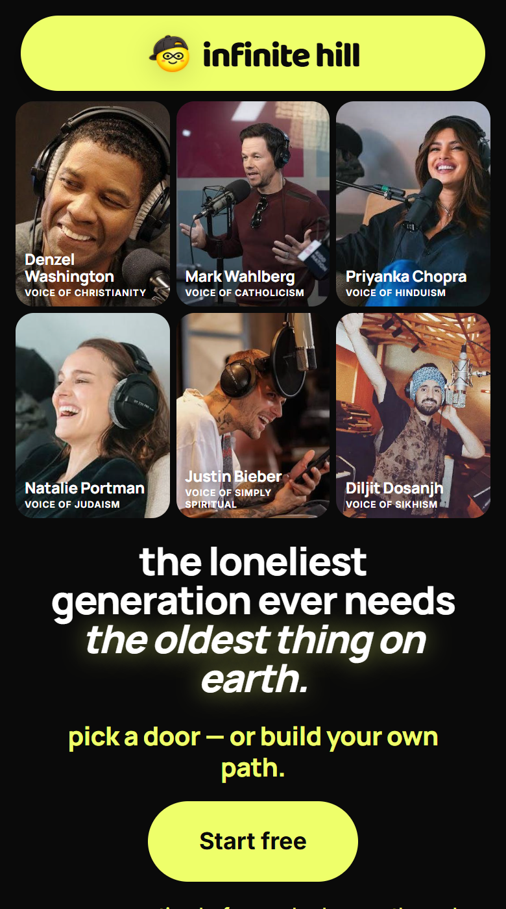
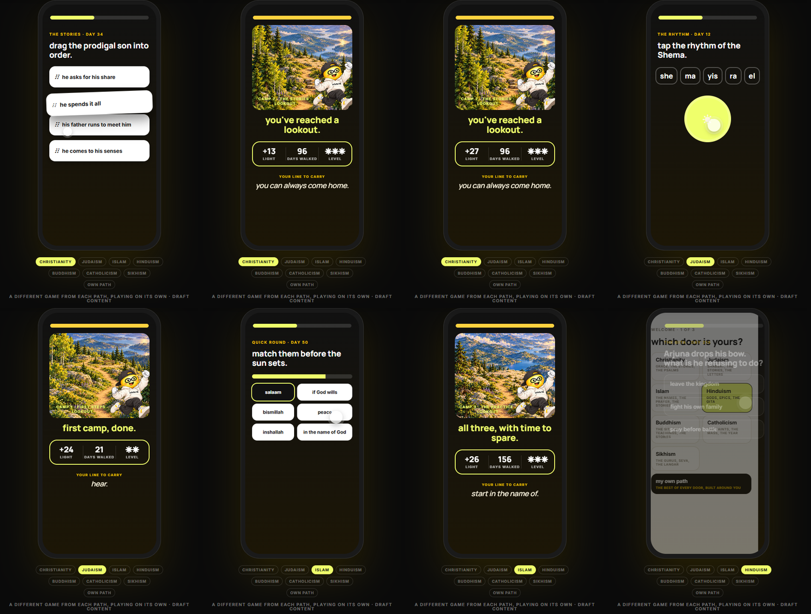
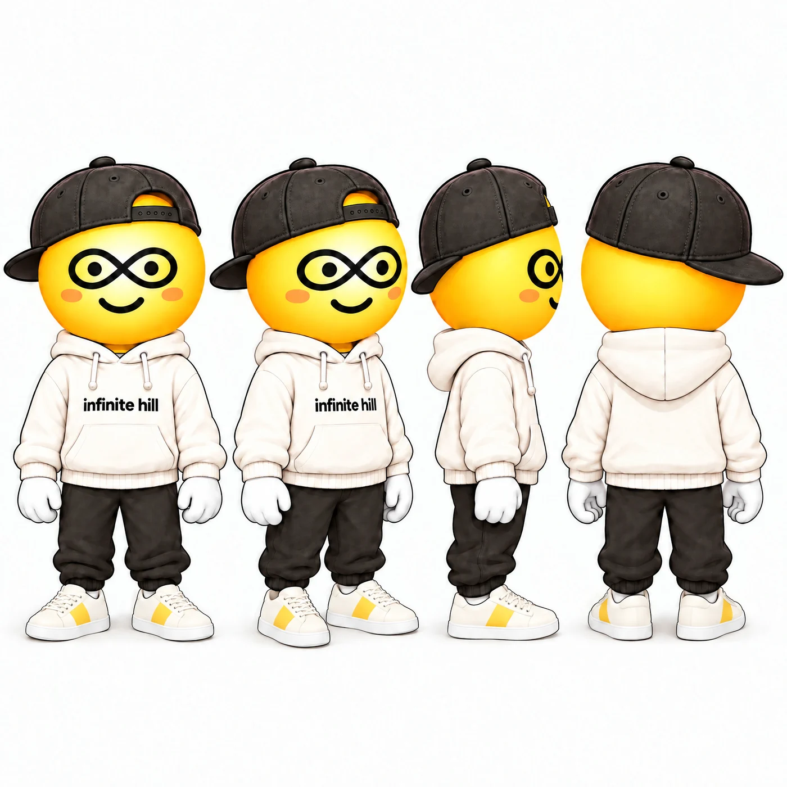
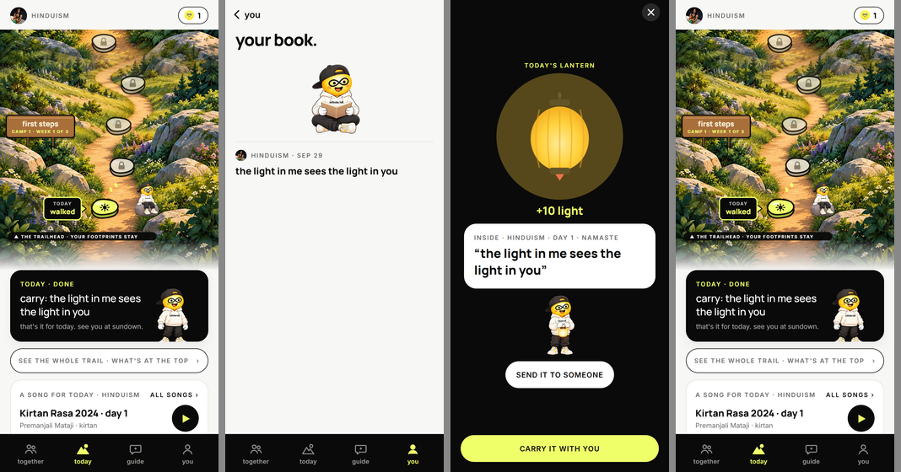

step in to remember who you are. step out to live it.
How Infinite Hill looks, sounds and behaves. The big idea (docs/brand/BIG-IDEA.md) comes first; this book follows it. Where an older doc, mockup or screen disagrees with this book, this book wins.
current · 15 Nov 2026 · for the owner and Xogito
how to read it
Every rule here comes from a decision the owner made. Small grey dates say when. A proposed tag means the idea is on the table and not approved: don't build it as final.
the taste gate
Nothing reaches the owner unless the creative director has passed it, compared against real reference work. Show a few strong options, never a long list of okay ones.
quoting advisors
When you write up advice, keep what someone said apart from our own ideas: tag it [Hans], [Kevin], [my suggestion]. Never put our idea in an advisor's mouth.
settled · 10–15 Nov 2026
These ended open conflicts. Where anything below disagrees, these win.
The celebrity guide asks and narrates; Finn never talks (14 Nov).Your path's celebrity guide asks every question and says every scripted line, with their round photo and name. Finn is wordless: he pops in with still art and a bounce on right answers, streaks and finished stories (the dance videos are gone). The live AI chat shows the guide's photo but is labeled "your [faith] guide · powered by AI", never "Denzel says". Before a path is picked, questions show with no speaker. Guide lines are written by us and checked like every lesson.
One day (14 Nov).A 60-second story film → the guide's questions → the reveal (the real place tied to the story lights up as a spot on your path, and the guide names it) → claim my card → your path for the week. Places are named only after the story, never before. Paths are named by faith; the old home names (Olive Grove, Marigold and the rest) and the eight-homes map are gone.
Your streak is lit (15 Nov).Seven days in a row with no rest day: "your streak is lit" (Spanish "encendida"). Never "golden". Rest days and earn-back stay.
The Holy Land (15 Nov).Every place in Israel, the West Bank, Palestine, East Jerusalem or the Golan is labeled "the Holy Land" ("Tierra Santa"), never a modern country.
"what i live by" (15 Nov, approved to build).In "my own religion", after each story you mark it "this is me", "not sure yet" or "not for me"; now and then the guide asks an optional big question. Your page groups what matters to you, what you're still figuring out and what's not for you, each piece tagged with its faith and source, and the guide answers from it. Faith paths get a lighter "what spoke to you" (no "not for me": the teaching stays the teaching). Private, on the phone.
Money and privacy (14 Nov).Paid plans are ad-free and a family plan; the free daily lesson may carry ads later, so never promise "no ads". No account: everything stays on the phone; only guide questions and an anonymous return count leave it. We don't sell your faith.
One faith at a time, the Guide included.On a faith path there are no cross-faith answers and no "visit another faith" offers. Crossing faiths happens only in "my own religion".
Two-faith families follow two separate paths.They switch between them; the two faiths are never mixed in one lesson.
Hindu deities may be shown,as Hindu art traditionally does. Never show God in traditions that don't depict God, and never the faces of Jesus, Muhammad or the Sikh Gurus.
Trips earn story cards; stamps are only for real-life attendance.
Name celebrities as guides, never "signed".
AI-generated people are for mood drafts only.Anything that runs uses real people.
01 · our story
every generation had a way through. we walked away.
Every generation before us had a way through hard days. They called it religion. Ours walked away from it, and replaced it with a feed. Now we're divided and confused. But we can learn, together.
Infinite Hill is the best of a video game and AI: a beautiful world you step into every day, and a guide you already know who talks with you, learns who you are and plans your days. When life gets loud, you step in to get grounded and guided. Then you step back into your life, a little steadier. Step in to remember who you are. Step out to live it.
the tagline · locked
making religion yours again.
It sits under the logo, everywhere. Spanish: "la religión, tuya otra vez". It replaced "making religion cool again" on 20 Oct: "cool" felt shallow and could read as a joke about something sacred; "yours" carries the offer (your faith, or your own). Never bring "cool again" back.
the big idea · locked 22 Oct
step in to remember who you are. step out to live it.
The world and your real life keep crossing over: breathe in your car while your screen is the waterfall, ask a pastor anything out loud, then walk into a real church on Sunday. Inside the company: from ego to awareness and back, easier each time. In public we say it in everyday words.
the hero copy · 3 Nov
because you gotta have faith.
"understand yourself. understand each other. pick a faith or build your own faith, with celebrity guides and voices you know." Headline and one line, nothing more.
Before paid ads: the headline echoes George Michael's "Faith". Never use the song or its look without a license, and a trademark lawyer glances at it first.
the offer
pick a faith, or build your own.
Go deep in one faith, or choose "my own religion", where exploring every faith and what they share lives (opt-in, curated to you by the AI). Say "build your own faith", not "create your own religion". The owner thinks many people will pick "my own religion", so it has to be incredible.
sell the want
nobody wakes up wanting to learn religion.
People come for a want: answers when the kids ask, peace at a two-faith table, the meaning behind prayers they already say, something real without the rules, help in a hard moment. Heroes, ads and store pages lead with the want and the outcome. The daily loop is the how, never the pitch.
the guide
someone you already know, who knows you.
Your path's celebrity guide (Denzel Washington for Christianity) tells every story and asks every question, inside your one faith. The live AI chat shows the guide's photo, labeled "your [faith] guide · powered by AI", and is never presented as the celebrity speaking. Finn never talks; he celebrates. 14 Nov
The story we tell, in order (film, site, deck): the problem → "but we can learn, together" → the answer in three parts (people you already know, technology that knows you, a world you want to come back to) → "Introducing Infinite Hill" → what it's like to be there (experiences, never a map first) → the real place each story is tied to, revealed after the story and kept as a card on your path → trust: a scholar of each faith checks everything and can say no → "One human race. One hill." → "Infinite Hill. Making religion yours again."
The spine is one person, Christian-first: a mom in her car, guided by Denzel on the Christianity path. Lost in real life → steps in through her phone → grounded and guided → steps back out changed → walks into a real church on Sunday → her family lights a lantern on the hill.
one human race. one hill.the line we close on · then "infinite hill. making religion yours again."
Homepage order (3 Nov): what it is → why bother → made for you, wherever you start → a day picked for you (30-second video) → celebrity guides → build your own faith → or go deep in one faith → which one sounds like you → scholars → real people → start free. "Made for you" must welcome people who already have a faith. Founder's story: to be written in Shaan's own words; not on the site yet, by choice.
02 · what everything is for
big statements out loud. one faith at a time inside.
"the goal of everything we're doing is to create these big statements that get people to see commonality and treat each other better."the owner · 10 Nov 2026
That purpose works on two layers, and they must not blur. The brand shouts the common ground. The lessons go deep in one faith. If a lesson ever feels like comparative religion, it's wrong.
layer 1 · the brand
loud, shared, about how we treat each other.
Billboards, the site hero, social. Bold statements with present-day people, Magna-level confidence. We claim one specific shared teaching at a time, checked by every Keeper. Never "all religions are the same".
layer 2 · the lessons
one faith, deep.
Inside a faith, the Guide's answers, stories, places, passport and offers all stay in that faith: no cross-faith answers, no "visit another faith" offers (10 Nov). Switching faith is a quiet link in the You tab. Films and the site show one person going deeper in one faith over days, never "8 of 8 faiths visited". The eight-homes map and the gondola are gone (4 Nov).
where faiths meet
"my own religion".
Cross-faith exploring, "what they share" and the full passport live only here. Every pick is curated to the person. Each piece names its tradition plainly, never blended or ranked. Frame it as "more in common than you think", never "all the same".
the inversion: faith fully real, packaging modern.
The reference is Radhika Das and Jahnavi Harrison's nights: real bhajans, sung by people who look like cool everyday people, with a mixed band (saxophone, guitars, musicians of every background, Hare Krishna monks among them), in a Hackney club, to a crowd that's mostly not Indian. The owner: "it's dope." We're more alike than different, and people feel it through shared experience like music. It's never taught as a side-by-side comparison. Look for the same mix in every creator and guide we cast.
Christian-first in marketing.
Assume the main viewer is an American Christian family. Lead with familiar Christian moments: grace at dinner, church, a gospel choir, Christmas, the lost sheep. Christianity is first in every list. Show every other faith warmly, alongside. Never open a film, page or pitch with Diwali, kirtan or Ganesha. This is marketing order only: the Hindu-parents alpha and the Hindu lesson pilot don't change.
all religions are the sameranking faithsa tour of every faith8 of 8 faiths visitedtemple-hall stylingpolitics
03 · the north star
loud. on trend. shock value. like Magna.
Owner, 6 Nov: everything we do now is loud and has some shock value, the way Magna does things. "They're super on trend. So we're going to follow them." Magna is the brand model for the website, the app and every lesson. It's a different category, so borrowing its look and moves closely is fine.
take
one ownable color pair.
Magna owns lime and black on every box, bottle and post. We own lime #EEFF6A and black the same way. The chunky wordmark doubles as a graphic.
take
real people, grainy film.
Magna shoots real athletes and runners on grainy film. Our brand work shows present-day people with dignity and tension, never glossy stock models.
take
drops.
Magna drops limited flavors, each with its own type. Ours: episodes drop at a set weekly time with a countdown, and the drop's collectible (a card, a fit for Finn) is the limited part. proposed
take
a short homepage.
Hero, one line, one button, then a few proof points. Fewer, louder sections.
take
IRL nights.
Magna runs run clubs and DJ nights. Our IRL drop nights earn the real stamp. proposed
don't take
the joke register.
Magna's best reel puns on "your body is a temple". That works for a drink; on a faith brand, punning on scripture is out. Our shock comes from surprise, confidence and true sentences, never from mocking a faith, being crude, violence or romance. ("my mind is a temple" is not approved; don't use it.)
the owner's taste test (6 Nov)
He marked 25 real references. Grade work against these, not against our past work.
"big and loud… shock the world or go home." "forward thinking, super wow." "disruptive, went after stale incumbents."
meh · no
HallowBenedictine chantThe ChosenBibleProjectCo-StarSkyA24AI Bible vlogsMonument Valley
Hallow: "not forward thinking, not cool enough." Quiet arthouse restraint, museum crops and prestige drama miss his bar.
the bar
Big, loud, music-led, live-crowd energy, a mixed crowd doing faith where you'd never expect it, teamLab-level wow, pop that kids share, disruptive against stale incumbents.
bold, not cautious
Lead with the wow: films, celebrity guides, music, the cool everyday-people look. Raise risks plainly, but never shrink the product into a lean test. A few great things beat hundreds of ideas.
as good as the feed
We only survive if we're as good as the best faith creators on Instagram. Instagram is the front door; the app keeps what a feed can't give: a guide who knows you, a path with a finish line, daily tools.
04 · values
what we hold to, every screen.
These came from real decisions in the product, not a workshop. Each one already changes how something works.
your faith is yours.
People choose their path, and everything inside it stays in that faith. Someone who wants to stay in their own tradition never sees another religion unless they choose "my own religion". We never rank a faith or ask anyone to switch.
never pushy. prayer is a choice.
"Pray" can feel intimidating. Wherever prayer appears, say plainly that it's your choice: watch, learn what it means, or join in. Nobody is asked to believe anything, and nobody is asked to sing.
we score learning, never faith.
Points for knowing a word or a story. Never for praying, never for believing. The breath, the sit and the line you carry have no timer and no score. No leaderboards.
honest about what's real.
We never invent a testimonial or a community number, and we show real counts only above a threshold. We don't claim a feature works until a live request proves it. Nothing religious goes public before a scholar of that faith has read it, and unreviewed work is simply not shown: no "draft" labels in anything a user sees.
joy is loud here.
Finn bounces in on your wins, your streak gets lit, drops land with a countdown, a lantern lights when you finish. Serious about faith; never solemn about ourselves.
everyone is welcome, including unsure.
Grew up in a faith and not sure anymore, never had one, practice every day: each gets a way in that fits, and nobody is asked to believe anything.
a company that gives.
Infinite Hill is a for-profit company, so it can pay its own way and never has to beg. Part of what it earns goes to the Infinite Hill Foundation, a separate nonprofit being set up now. Anything someone gives inside the app goes to the Foundation in full. The Foundation funds scholarships so people who can't pay still get the year, free plans for students and youth groups, and the traditions our lessons come from.
How we say it: "part of what we earn goes to the Infinite Hill Foundation". Always add "in formation" until the papers are filed, and don't name a percentage until one is set.
05 · personality
we are this, but not that.
warm first
We meet the feeling before anything else, like a friend who's glad you came.
but not gushing or fake. Compliments are specific.
loud
Lime and black, big type, drops, reels, shock that makes you stop.
but not cheap. Shock carries weight; it never mocks a faith or a person.
playful
Games, a mascot who celebrates every win, a roast of boring faith apps.
but not flippant about faith. The joke is never on a belief, a believer or a grandparent.
reverent
Every tradition is taught from its own stories and texts, carefully.
but not churchy, preachy, hushed or "temple hall".
punchy
Short, verb-led, plain words, American spelling.
but not corny, kiddie or corporate. The stories are the real ones.
on trend
We sit at the front of culture, next to the best creators in the feed.
but not a meme. Each tradition stays itself, never blended into mush.
06 · who we're for
one family first, and seven people we build for.
Unlike the brand books we studied (ipsy, Honest, ShoeDazzle), we're pre-launch: these are hypotheses, each with a way to check it. Every persona can come from any tradition, so names never hint at a religion. The app's first question ("where are you with religion right now?") already sorts people this way.
Since 14 Oct 2026 one lead persona comes first: the family, built from the three cards that now open the homepage ("my partner and i grew up in different religions.", "we have two religions at home. what do we teach our kids?", "our kids ask questions about our religion, and we don't have the answers."). The seven below are still people we build for, as secondary personas. All of it, the lead included, is a hypothesis to test in interviews.
Since 4 Nov, one faith first applies to every persona: inside a path, everything stays in that faith; crossing faiths happens in "my own religion". Since 10 Nov, a two-faith family follows two separate paths and switches between them; the faiths are never mixed in one lesson. Marketing still leads with a Christian family (see 02).
the lead persona
Sara & Theo
the family · 30s–40s
"We grew up in different religions. Now the kids ask us questions, and we don't have the answers."
One home, one or two traditions. Partners who want to understand each other's family, and parents who want to teach their kids without picking a winner. Sometimes it's one faith they half remember and can't explain. They want roots for the kids and peace at the table, not a debate.
reads
one path, or two separate paths they switch between (never mixed in one lesson); the stories behind what the kids keep asking about.
plays
a family quiz at the table; "what does it actually mean?"
writes
the kids' questions, and the family's line of the week.
practices
one blessing from each side; one breath before bed.
what we want them to do: one lesson a week together, and feel they can answer the next question.
How we'll know: interview families from each of the three cards; then, do the ones who sign up (partner, kids, kidsask) open a lesson together in week one?
the seven, secondary
Maya
the returner · 31
"I grew up Catholic. I'm not sure what I believe anymore, but I miss something about it."
Grew up in a faith and drifted. Put off by rules and judgment. Feels the gap at weddings, births and funerals. Example backgrounds: Catholic, Hindu.
reads
her own tradition with fresh eyes: the stories she half-remembers, told properly.
plays
"what does it actually mean?", true or myth, put the story back in order.
writes
one line kept in her book; "what I used to think" once a week.
practices
one breath, growing to a short sit.
what we want her to do: come back three days in a row, then keep a line every week.
How we'll know: 5 Returners use "your roots, with fresh eyes" for a week; do they come back on day 3?
Sam
the deepener · 42
"I pray every day. I've never read the book cover to cover."
Already committed. Wants depth, not an introduction. Will spot a mistake instantly, so scholar review matters most here. Example backgrounds: Muslim, Sikh.
reads
the texts in order: a surah a day, Japji verse by verse, the weekly portion.
plays
higher levels, "go deeper", typing and saying words in the original.
writes
notes on a verse; questions for the Guide.
practices
their own tradition's practice, with the festival calendar.
what we want him to do: finish a whole text and tell someone.
How we'll know: do Deepeners reach level 3 and use "go deeper" weekly?
Jordan
the seeker · 26
"I'm not religious. I just want something steady."
Put off by "organized religion", curious about the Stoics, Rumi, meditation and the research. Takes "my own religion".
reads
wisdom stories from every tradition, each with its source.
plays
match the idea to its source, the quick round, the rhythm.
writes
an evening review.
practices
breath, walking, a body scan. Yoga would fit here.
what we want them to do: build a daily practice that's theirs, and try one week inside a tradition.
How we'll know: does a Seeker take a "taste from next door" and keep the line?
Priya & Dan
the bridge-builders · 34
"My partner is Jewish and I'm Hindu. I want to understand her family before Passover."
Learning someone else's path out of love. Needs practical, respectful basics fast.
reads
the holiday coming up; what the words at the table mean.
plays
say it back; match the word to its meaning.
writes
questions to ask their partner.
practices
the blessing, the greeting, one ritual together.
what we want them to do: each walk a path (two separate paths, switching between them) and send each other a lantern.
How we'll know: do couples send lanterns back and forth in the first week?
Nicole
the parent · 38
"I want my kids to know where we come from, and I'm not sure I know enough to teach them."
Buys for the family. Learns alongside the kids. Example background: Christian mom of two.
reads
kid versions of the stories, with a note for grown-ups.
plays
a family quiz at the table.
writes
the family's line of the week.
practices
a table blessing; one breath before bed.
what we want her to do: one lesson a week, together, at the table.
How we'll know: do families with kids' profiles open the app together on weekends?
Ray
the hard season · 55
"My dad died in March. I keep going back to the prayers I learned as a kid."
Arrives in pain, often at night. Needs gentleness, not a streak. Comfort, never advice, and a pointer to real help.
reads
what his tradition says about grief and hope.
plays
little or nothing. The games step back.
writes
a private note to the person he lost.
practices
his tradition's mourning prayers; a lantern at night.
what we want him to do: come back tomorrow night, and feel less alone.
How we'll know: we don't measure this one with streaks. We ask.
Zoe
the fan · 19
"Wait, Priyanka Chopra reads the Hindu one? I'll try it."
Arrives through a celebrity. Curious, low commitment, the biggest top of funnel and the easiest to lose on day two.
reads
day one in her star's voice.
plays
everything fast: the quick round, glowing ×3.
writes
one tap: "keep it".
practices
one breath.
what we want her to do: finish day one, come back on day two, send one friend.
How we'll know: day-2 return rate for people who arrive from a celebrity's link.
07 · voice
warm first. punchy, never corny.
In the app your path's celebrity guide says every line and says "i"; Finn has no lines (14 Nov). On the website the company speaks as "we". "we" only ever means the company. The full guide is docs/brand/MASCOT_VOICE.md: read every line as the person in that moment (grieving, scared, low, curious, dragged there by their parents) and ask whether Usha would have said it that way.
we are
warm firstlowercase, mostlyshortverb-leda little playfulspecificmotivatingAmerican spelling
Write UI copy like the best consumer apps. "you're back. that's what matters. let's go." "five days in a row. look at you." "tomorrow i'm taking you somewhere new."
we are not
cornykiddiecorporatepreachyguilt-trippycold or legalcomparing faithsBritish spelling
Killed by the owner: "finish it to earn a keepsake for your shelf" ("so corny"), "today's class", "fly there · walk it in 3D", "(stand-in voice in this demo)", "we can't tell you what comes next" (cold).
the voice rules
Meet the feeling, then the offer."i'm so sorry. you don't have to carry this alone." Even funny lines stay kind. Never guilt, shame, fear or pressure.
Always motivate.Progress lines celebrate: "you climbed higher", "look how far you've come". Never "the hill never ends", "only one step", "just".
Roast the stale, never the faith.Finn can call out boring faith apps: tired fonts, stock sunsets, guilt notifications, paywalls on prayer, hour-long audio. "your grandma's prayer app called. it wants its font back." Never name a competitor. Never mock a faith, clergy, believers or grandparents: the joke lands on the app, never the grandma.
Say "celebrity guides".Never just "famous guides", which could mean famous scholars. Don't name a celebrity in copy unless that use is approved.
Never say "signed".Name celebrities as guides. Not "signed", "confirmed" or "under contract" about any celebrity or scholar, in anything shared outside the company. Say "a scholar of each faith reviews every class".
The guide talks; Finn celebrates.Your path's celebrity guide asks every question and says every scripted line, with their photo and name. Finn has no lines and is never voiced: still art and a bounce only. The live AI chat is labeled "your [faith] guide · powered by AI", never "Denzel says" (14 Nov; replaces the 10 Nov "mascot chats" rule).
Prayer is a choice.Pair "pray" with choice: "pray, if you want", "watch, learn, or join in".
No sing-along.Never ask anyone to sing, hold a mic, "hold to sing" or "say it back". Music stays; singing along is their own free choice, never prompted or measured.
No romance, ever.No love, flirting or dating angle. When the owner asks for "wow", he means spectacle and jaw-drop.
No draft labels, no limits talk.No "draft", "review pending", "demo" or "stand-in" in anything users see. Never mention daily AI limits.
Never invent people or numbers.No made-up testimonials, quotes or community counts. First-person lines run only over real people saying their own words, with consent.
No AI speaks as God.No invented words for God or put in a holy figure's mouth. Quote real texts with their source, straight: no puns on scripture.
Crisis care, every language.Danger or self-harm always points to 988 (US) or local emergency help.
moment
what Finn says (live in the app)
why
a right answer
yes — exactly.that's it.right on.lit. (and Finn bounces in)
short, warm, a little variety so it never feels canned
a wrong answer
almost. then the answer, then okay, next
a shrug, never a scold; the reveal is the interesting part
finishing a lesson
you're on the hill! · day 12. done! · proud of you. see you tomorrow.
the one place we celebrate out loud
coming back after a gap
rest days had your back. your streak is still here. · (if it did break) earn your streak back: finish 2 lessons today.
no guilt, ever; rest is built in, and a way back is always free
the streak
one lesson a day grows it. rest days protect it. · 7 days in a row, no rest day: your streak is lit.
the sun is our flame and the number leads. rest days are soft moons, never red
the streak saver (8 pm)
your 12-day streak would love one lesson tonight. i'll keep the lantern on.
only when no rest day is left; never on a quiet day, never at bedtime
after a quiet week
we'll stop reminding you for now. your hill will be right here.
then we go quiet
day one's promise
nobody here will ever tell you what to believe.
we ask how you hold your faith, gently; we never tell
words we never use
cool againfamous guidessigneddraftthe hill never endsonly one stepkeepsake for your shelfconvertthe same as (another faith)better thanyou should believescience provesfailed / broke your streakorganized religion (as a put-down)fob
Style: American spelling everywhere (practice, honor, color, center, neighbor). Product surfaces are lowercase; prose and legal use "Infinite Hill". Emoji rarely, and never in grief, health or crisis. Exclamation points only for real joy.
08 · the look
lime and black. loud.
Magna's rule: one ownable color pair, everywhere. Lime and black carry the brand on the site, in the app, on the boards and in the films. Never drop the yellow: without it Finn looks off.
lime#EEFF6A · the brand color · black text on it
ink#0A0A0A · type, boards, dark sections
cream#F3EFE4 · words on dark; light pages
mute#6B6B6B · small labels
glow#FFD23F · "glowing ×3", Finn's sneaker band
coral#E5484D · "almost." only
color rules
Lime type sits on black, or black type sits on lime. Never lime type over a photo, never lime on lime. No rainbow treatments: no rainbow-gradient words, no rows of six colors side by side. The lesson episodes keep episode A's accents (pink, yellow, green, and each faith's own color); ask the owner before re-theming anything.
one look, everywhere
The site, the app and the films use black with cream words and lime for accents and buttons, in Anton and Manrope, with lowercase UI copy. The old night navy is gone (swept out 14–15 Nov). Films are branded like the app: film quiz rows look like the app's answer rows.
Antonthe wordmark, always all caps
infinite hill
Antonheadlines, screen and card titles, big numbers, all caps; the word to stress turns lime (Anton has no italic)
because you gotta have faith.
Antonbillboards and big statements, all caps
every faith says forgive. nobody wants to go first.
Manrope Bold / ExtraBoldbody, answers and buttons (600–800; never light)
a real story, the real teaching, then your life today. start free
Captionsfilm and photo captions: the line in Anton caps, the small note under it in Manrope Bold
the night out
told by your celebrity guide
Two faces only, as on the website and in the app: Anton and Manrope. No Inter, no Baloo 2.
photography
Present-day people in their own clothes, real-feeling, grainy, with dignity and tension. Nobody grins at the camera. Never glossy stock models, never people dressed in brand colors. Painted sacred art lives inside the lesson films only: in brand work, ancient paintings read as "too hardcore religion". AI-generated people are for mood drafts only (internal layout and mood). Anything that runs, on a board, a post, the site, a film or the app, uses real people: reshot or licensed (10 Nov).
shapes
Pills for buttons, chips and the floating top bar. Cards at 18–24px corners. On boards and big statements: hard edges, a black field, one heavy font, a tiny logo.

The website as of October 2026, for reference. The hero copy and homepage order have since changed (see 01); black, cream and lime, loud, is the direction.

On a phone, October 2026: faces, headline and Start free together.

The October demo. It showed eight doors side by side; today a person picks one faith (or "my own religion") and stays in it.
09 · Finn
Finn. the person you always want to be around.
A fun, smiling, infinite sun in a backwards cap. The owner named him Finn (from in-fin-ite) on 3 Nov. Use "Finn" in docs and planning now; the name goes into app or site copy only after a trademark and app-store search. He's modeled on Usha Kiran, the founder's mother, a teacher who made everyone feel like the best person in the world. He's the guide, not the faith: he cheers your effort, never a belief.
only the approved Finn. anywhere.
Every logo, splash screen, icon, pop-up, film frame and post uses the approved, redrawn art: apps/app/assets/mascot/*.webp. Never an old pre-redraw version (a face with no cap, the old sitting pose). Whenever ChatGPT or Runway draws him, upload the approved art and check every frame against the eight points.
the eight-point check
1 infinity-sign glasses (not round goggles) · 2 small smile and pink cheeks · 3 black cap worn backwards · 4 cream hoodie reading "infinite hill" · 5 white gloves · 6 black sweatpants · 7 cream sneakers with one yellow band · 8 round yellow head.
wavehello; the start of a lesson
thinkwhile you answer
cheera right answer
celebratethe win screen
meditatethe breath and the sit
walkup to today's stone
climbthe hard parts
sit on rockafter today's lesson
sleepthe hill after 8pm
readyour book
lanterntoday's lantern, lit
sunrise stretchlighting your day
namasteHindu path only
thumbs uptoday's done; pricing
peekon the website
tapwhen you tap him
Finn celebrates, wordlessly
Finn pops in on right answers, streaks and finished stories, using the approved still art with a bounce. He never talks, never has a speech bubble and is never voiced (14 Nov). The dance videos were pulled (14 Nov: not good enough); dancing comes back only if a new version clears the owner.
Finn's drip
The owner loves it (7 Nov): streaks and milestones unlock fits for Finn: a cap, a chain, a jacket. Every fit is a variation of the approved backwards-cap Finn. Never a tradition's religious dress as a costume. being explored
rules for Finn
Always fully in frame. Never jokes about God, scripture or ritual. Never inside a painted sacred story: in a film he reacts at the cold open and closes, outside the story. Never on an accusation billboard (a cartoon turns it into a joke). Still pictures for anyone who's turned motion off.
the model sheet
The reference for every new picture and animation: front, three-quarter, side and back. Hand these to anyone drawing him, and to ChatGPT or Runway with every request.

Turnaround. Round lemon-yellow face with soft pink cheeks; black infinity-sign glasses; black cap worn backwards; cream "infinite hill" hoodie; black sweatpants; white gloves; cream sneakers with one yellow band.
the sneaker, exactly
Plain cream low-top, white sole, cream laces, and ONE wide solid yellow band (#FFD23F) across the middle. No parallel stripes, no checks or swooshes, no logos. Two or three stripes are another company's trademark; we never use them.
the face stays the same yellow
Lantern light, sunsets and glows touch only the props and the background. His face is always the same clean lemon-yellow, so he never looks like a different character.
twelve expressions
Faces for reminders, reactions and small moments. Left to right, top to bottom: proud, delighted, laughing, surprised · curious, thinking, worried, sheepish · sleepy, calm, quietly moved, determined.
Use the gentle ones (calm, quietly moved) for grief, rest days and the lantern. Save laughing and surprised for wins. Never worried or sheepish about someone's faith or a missed day.
10 · billboards and big statements
every faith says. then it catches us.
Direction A, "every faith says", is the current billboard system (creative director's brief, 10 Nov: docs/brand/billboards-v2-brief.md). It replaced the v1 joke boards, which the owner called "way off… really bad. How is anyone supposed to take our billboards seriously?"
the shock is never the picture. the shock is a true sentence that catches the reader doing exactly what their own faith told them not to do.the one thing to remember
the idea
Each board names one command every faith shares, then a second line catches us breaking it this week. The target is "us", the brand included, never a group or a faith.
why only we can say it
He Gets Us has to end on one faith. A brand that holds eight paths can say "every faith says". It's our moat on a billboard.
Christian-first
The launch board is "love your enemy". A Christian reads Jesus's words, then learns the whole world was handed the same assignment.
01 · no better than anyonetype only · the reader supplies the image
Every faith says you're no better than anyone.
You just thought of someone.
infinite hillmaking religion yours again.
Every faith says you're no better than anyone.
You just thought of someone.
infinite hillmaking religion yours again.
02 · love your enemythe launch board · opens on words every Christian knows
Every faith says love your enemy.
Most of us just want them to lose.
infinite hillmaking religion yours again.
Every faith says love your enemy.
Most of us just want them to lose.
infinite hillmaking religion yours again.
03 · welcome the strangerlegal check on the doorbell-camera look
Every faith says welcome the stranger.
We check the doorbell cam first.
infinite hillmaking religion yours again.
Every faith says welcome the stranger.
We check the doorbell cam first.
infinite hillmaking religion yours again.
04 · feed the hungrytype only · the bulletin runs only within sight of a real corner · we never photograph unhoused people to sell an app
Every faith says feed the hungry.
He's been on that corner all year.
infinite hillmaking religion yours again.
Every faith says feed the hungry.
He's been on that corner all year.
infinite hillmaking religion yours again.
05 · forgive
Every faith says forgive.
Nobody wants to go first.
infinite hillmaking religion yours again.
Every faith says forgive.
Nobody wants to go first.
infinite hillmaking religion yours again.
AI drafts, for composition and mood only. The photos were generated to judge layout. Real boards use reshot or licensed photos of real people. Left: the 14x48 highway bulletin, to scale. Right: the same board as a 4:5 phone post.
the layout system
14x48 bulletin: black field. The black-and-white photo takes the left 45%, cut hard, no fade. Setup line in white Anton at about an eighth of the board's height; turn line in lime Anton at about a quarter (readable at about 500 ft). Lime touches only the turn line. Wordmark bottom right in white at about 4%, "making religion yours again." beneath it. No Finn. 6% margins.
Words: turn line 6 words or fewer. The setup line repeats across the series so drivers only read the turn.
Phone (1080x1350 feed, 1080x1920 story): photo on the top half or none; turn line broken by hand to 2–3 words a line; must read at a 375px-wide preview. If a word won't fit, change the word.
what comes next
proposed A scripture-source footnote on each board, and a payoff line. Neither is approved yet.
Direction B, "the hard seat": real people, in their own words, on the hardest kind thing they did for someone who hurt them (the line the owner loved: "I SAVED A SEAT FOR THE ONE WHO HURT ME"). It runs only with real people's true stories, with consent, photographed for real. Never generate it to save time.
Direction C, "second look": a two-frame reveal (you judged; you were wrong). A film and social idea, not a static board.
the kill list (from v1)
No punchlines on peace.A joke releases the tension the line should create. These boards make you go quiet, not smirk.
No commonality through snacks."We share fries" shrinks the hardest thing humans do. If the act costs nothing, it isn't the idea.
No faith person as a prop.Never use a believer as set dressing for a gag.
No scripture riffs.Quote the teaching straight or don't quote it.
No grinning.Glossy smiling models are stock photos. Dignity, not delight.
No brand-color costumes.People wear their own clothes. Lime lives only in the type.
No fake first-person testimony.First-person lines run only over real people saying their own true words, with consent.
No tension, no board.Every image needs two forces pulling: hurt and grace, judgment and truth.
No lime on lime, no lime on photos.Lime on black, or black on lime.
No unbroken type.Break every line by hand; test at 375px and at 14x48 thumbnail. Rewrite the words; don't shrink the type.
Never claim the faiths are the same.Claim one specific shared command per board, checked by every Keeper.
No board that could hurt the wrong reader.Read every line as the most hurt person who will drive past it. ("Honor your father" was killed: it would tell an abuse survivor to call their abuser.)
Before anything goes public: Keeper sign-off on every "every faith says" claim, a legal check on the doorbell-camera look and the headline system, and phone-size screenshots to the owner.
11 · lessons and films
a real story. the real teaching. then today.
The lesson standard (10 Nov, docs/LESSON_STANDARD.md). Every lesson on every path has one shape. Hindu week 1 is the finished model. The test for every lesson: could only this religion's story have taught this? If any self-help app could say it, rewrite it.
Updated 14 Nov: days 1–28 of each faith now run as one day: a 60-second story film → the guide's questions → the reveal → claim my card → your path. The guide asks every question; Finn's beats below are wordless (still art and a bounce, no lines). The 10 Nov shape still describes later days.
1
the path screen
The week card ("week 1 · days 1-7"), the streak, and your guide saying today's title.
2
the film
40–50 seconds, vertical, sound on. No film yet? A tap-through story over that lesson's paintings.
3
five quick games
Guess, match, myth-or-true, fork (a friend's text: what do you say?), order (build the word). They test the teaching, not a life tip.
4
today
The thing to carry, how to do it, and "where this comes from" (the sources).
5
the win screen
Streak, games score, the word card (original script, how to say it, what it means), tomorrow's title.
the film, beat by beat
beat
what happens
cold open · 1.8 s
The most shocking moment of the story and a 5–9 word hook ("a whole army lost to one sage.").
Finn reacts · 1 s
A wordless reaction shot; the caption hook ("wait. why?") is on screen, not in Finn's mouth.
the story, narrated
85–125 words, short punchy sentences, big captions timed to the voice, one word lit lime.
the turn
A snap, a beat of silence and the music drop on the surprising moment.
the teaching
Said plainly, then one line about a teen's life today.
Finn closes · 1.9 s
Finn cheers, wordless; the day's line runs as a caption ("a prayer for a clear mind.").
rules for the words
Real stories from the tradition's own sources. Stay inside one faith (only "my own religion" crosses faiths, crediting each tradition plainly). Open to every school within a faith. No invented words for God. Prayer is always the viewer's choice. No romance angle. Nothing goes public before a scholar has read it.
rules for the pictures
One house style for every path: cinematic hand-painted sacred art, warm golden lamp and fire light, deep soft shadows, rich earth tones with deep red and gold, close human framing. The same characters look the same in every shot. The last shot is always today: real modern people of that faith, warm and everyday (real footage or licensed photos once it runs; AI people only in drafts). No blood, no text in pictures, only the approved Finn.
never shown
the face of Jesus (only from behind, hands, or far away)any prophet in Islam, in any formany Sikh Guru, in any formGod, in traditions that don't depict God (Hindu deities may be shown, as Hindu art does)an AI speaking as God
episodes that drop proposed
The owner liked the sneaker-drop idea (7 Nov): episodes drop at a set weekly time with a countdown and teasers. Only the collectibles are scarce (a drop card, a Finn fit for watching within 48 hours or during a holy week). Lessons are always free and always there. No fake scarcity, no pay-to-get drops, and rest days still protect the streak.
how a film gets made
Script and shot list (Claude) → narration (ElevenLabs v4 in Runway) → pictures in the house style (ChatGPT, with the reference picture attached) → each picture becomes a 5-second 9:16 clip (Runway, Kling) → the edit: captions on the voice's pauses, the drop, music (our ffmpeg tools). About 400 Runway credits (about $4) a film.
Status, 10 Nov: Hindu week 1 is in the house style with moving clips. The other seven paths' week 1 scripts are written and in production. Days 8+ run in the same lesson page with the tap-through story until their films are made. Before anything goes public, a scholar for each faith reads that path's scripts and pictures.
12 · the world
the hill is home. the stories take you places.
Paths are named by faith, never by a place (the old Olive Grove / Marigold home names and the eight-homes map are gone). Each story ends with the reveal: the real place tied to the story lights up as a spot on your path and your guide names it. Then you claim your card, and "see my path" shows this week's seven stories as a climb, lit spots showing their place and the next one a mystery. Places are named only after the story, never before. You go deeper in one faith; you don't tour all eight (14 Nov).
Every place in Israel, the West Bank, Palestine, East Jerusalem or the Golan is labeled "the Holy Land" ("Tierra Santa"), never a modern country (15 Nov). For a parable or legend, keep the reveal honest: "where it's told", "see it at".
two registers
Outside the stories: your path, Finn and your guide, in black, cream and lime. Inside a story: cinematic sacred art. Finn never steps inside the sacred story.
stories earn cards
Each story ends with the reveal and one "claim my card" (14 Nov); cards are kept in your passport. Cards have rarity: holiday cards are limited editions; finishing a week makes them holo. A Wrapped-style year recap and, later, real pins and patches being explored.
stamps are only for real life
A stamp means you showed up in person: an IRL night, a service, a visit (10 Nov). The owner: "the artwork for the passport needs to be amazing otherwise who cares about a stamp." Style A, the postage stamp, chosen 3 Nov. Premium, collectible, one style, no people or faces. Plain stamps feel corny to kids unless they're done in a dope way.
first stepscamp 1 · day 21the storiescamp 2 · day 96the practicescamp 3 · day 156the textcamp 4 · day 231the big lookoutend of year one · day 331the rangesyears 2–5

The lookout paintings and screens from the current Expo app: the hill after today's lesson, your book, today's lantern. Painting style: warm, painterly storybook, golden-hour light, a sandy trail up the middle; no people, no single religion's buildings.
Progress copy on the hill always celebrates ("you climbed higher"). Never tell users the hill never ends.
13 · the game
our words for the game.
Borrowed from nobody. These are the names people see.
path
seven faiths and "my own religion". You pick one.
Finn
the mascot. (Name in public copy after the trademark check.)
your guide
your path's celebrity guide: tells every story and asks every question. Finn never talks.
episode · film
today's lesson: a 60-second story film, the guide's questions, the reveal, your card, your path.
the reveal · your path
after the story, its real place lights up as a spot on your path; "see my path" shows this week's seven stories.
what i live by
in "my own religion": your page of what's you, what you're still figuring out and what's not for you, each piece tagged with its faith and source. Faith paths get "what spoke to you".
stone
one day's lesson on the trail.
camp · lookout
the stages and the painted stop at each end.
light
points earned in a lesson (for learning, never faith).
glowing ×3
three right in a row.
the word card
the day's word: original script, how to say it, what it means.
lantern
lights when today is done; holds a line; can be sent to a friend.
passport · story card
trips earn story cards, kept in your passport. A stamp is only for showing up in real life.
your line to carry
the one sentence to take into the day.
your book
the lines you've kept.
the Guide
ask anything; your guide answers from your lessons (and, in "my own religion", from what you live by), inside your one faith. Labeled "powered by AI".
the games
guess · match · myth-or-true · fork (a friend's text: what do you say?) · order (build the word). Every game tests the faith's real teaching. No singing, no "say it back".
what never counts
Prayer, belief, the breath, the sit. A missed day is never a failure; your days come with you. No leaderboards.
the streak
A streak that grows one lesson a day, with rest days built in, because every tradition knows rest. Two rest days to start, never more than two, one earned back every 7 days; a missed day spends one on its own. If a streak breaks, two lessons in a day within three days earns it back, never for money. Seven days in a row with no rest day: "your streak is lit" (never "golden", 15 Nov). It can be switched off under You, it stays calm on quiet days, and it never appears in prayers, the journal, the companion or the help card.
14 · the paths
eight paths. you walk one.
Christianity first in every list. Each path is planned across five years. "my own religion" is the one place that crosses faiths, built from the world's traditions, each one taught faithfully, never blended or ranked.
The celebrity guides: Denzel Washington (Christianity), Nicole Kidman (Catholicism), Natalie Portman (Judaism), Mahershala Ali (Islam), Priyanka Chopra (Hinduism), Orlando Bloom (Buddhism), Diljit Dosanjh (Sikhism), Justin Bieber (my own religion). Use the faith names everywhere; "Simply Spiritual" and "Wildwonder" are old names, and "build your own" is only a call to action. In "my own religion", "what i live by" collects what you mark after each story ("this is me", "not sure yet", "not for me"), each piece tagged with its faith and source. Justin's line on the path is his 2021 GQ quote: "I don't want to let my shame of my past dictate what I'm able to do now for people."
path
year one
years two to five
Christianity
the parables, Mark read through, the Sermon on the Mount
the Bible in order · church history · where churches differ · the saints in their own words
Catholicism
the Mass in 14 scenes, the rosary, the sacraments
the Bible with the deuterocanon · Church history · the Catechism · Augustine, Thérèse
Judaism
Genesis as a serial, Shabbat, the weekly portion
the Torah and siddur · Prophets and history · Talmud and Maimonides · the sources
Islam
the prophets' stories, salat step by step, the short surahs
the Qur'an surah by surah · the seerah · the pillars and schools · Nawawi's forty
Hinduism
Ganesha to the Gita, the practices, the Upanishads
the founder's own five-year plan
Buddhism
the Buddha's life, metta, the Dhammapada
the suttas · the disciples · the schools · the sources
Sikhism
the ten Gurus, seva and kirtan, Japji Sahib
the Nitnem · the Bhagats and history · the ragas · the Granth in order
my own religion
wisdom stories with sources, practices, Rumi with Marcus Aurelius
the Stoics · the big questions · the Tao Te Ching · living it
Every lesson follows the lesson standard (11). A year goes live only after repeated review passes and the owner's okay.
the social playbook
tastefully playful, never mocking faith.
How infinite hill shows up online. Drawn from how Duolingo built Duo (Kat Chan, their senior director of brand marketing), and bent to fit a faith app. The short version: our mascot's personality comes from what he actually does in the app, we show up where people are already talking, and a few firm rules let the team move fast.
faith is serious. showing up every day can be fun.the creative platform · the line every post answers to
Duolingo's platform is "learning is hard, so we made it fun", and it's why their owl can get away with almost anything: he's pushy for a good cause. Ours does the same job. Every idea should pass one test: does it make showing up feel lighter without making the faith feel smaller?
the mascot's personality bible
Duo became "unhinged" because the app really did nag, and users turned that into a meme; Duolingo leaned into what was already true. Copying "mascot + chaos" without that root falls flat. Finn's truth is different: in the app he walks beside you, cheers when you finish, sits on a rock with you late at night, and holds a lantern for your friends. So that's who he is online.
he is
a good walking buddycheeky, never crueleasily delighteda bit extra about streakscurious about every traditionquiet when you're hurting
He'll do a dramatic slow-motion run to your door at 7:59 pm with a lantern. He'll wait on a rock for you in the rain, a little too patiently. He celebrates a 3-day streak like it's a wedding.
he never
threatens, even as a jokeguilt-trips about prayerwears religious dress as a costumedoes a tradition's gesture outside itpicks a sidejokes about grief
Duo's "violence for good" works for Spanish. It would read as spiritual abuse next to prayer. Our pushiness is warm persistence, never menace. (Namaste only on the Hindu path, the same rule as in the app.)
His name is Finn (in public copy only after the trademark check). He can also roast boring faith apps, never a faith, a believer or a named rival (see the voice rules).
where we show up: our lane
"Culture is the new marketing funnel": join conversations already happening, like a good party guest. Duolingo's lane is language and cultures (K-pop, K-dramas), and it stays out of elections. Ours is built in:
the religious calendar
Advent, Lent, Ramadan, Passover, Diwali, Vaisakhi, Vesak. The seasonal quests in the app are the same moments, so every post can point to something real to join.
faith in pop culture
Films and shows with faith at their heart, a celebrity talking about what they believe, the holiday movie everyone argues about. We add the story behind the word.
interfaith families
Two traditions at one holiday table, in-laws, kids asking big questions. The Table and the partner path make this ours.
the loneliest generation
Screen fatigue, the search for meaning, "I grew up with it and drifted". Our founding line lives here.
Off-limits: elections and party politics, wars and conflicts between faiths, scandals inside any religion, and "which religion is right" debates.
the rules: a floor, not a ceiling
Duolingo writes firm dos and don'ts for sensitive topics, then lets the team ship without sign-off on every post. We need that more than anyone.
always
never
make fun of ourselves, the mascot and modern life
make fun of a belief, a practice, a text or a holy person
say who does what ("many Catholics…, many Protestants…")
rank religions, or say one is right
quote real texts, with the source
invent a quote or a prayer
celebrate every tradition's big days on their own terms
mash two traditions into one joke
be gentle when the moment is heavy
use grief, illness or a tragedy for reach
speak to people with no religion as warmly as to the devout
imply someone needs to believe
One extra step Duolingo doesn't need: anything about a specific tradition gets a two-minute check by someone from inside it (the Keeper for that path) before it goes out.
how the team works
shortest path from idea to post
Small team of people who can think, write, edit and post. Speed matters most for reactive moments.
plan room for the unplanned
Leave space each month for moments nobody saw coming. Duolingo says its biggest hits were unplanned.
partnerships take years
Their Squid Game collab came after two or three years of friendly check-ins. Start warm relationships now with faith-film studios, youth groups, schools and the voices' teams.
hire for taste
Taste is harder to teach than execution. Judge it with a take-home ("10 post ideas for us") and a live riff, not interviews alone.
AI for the spark, humans for the idea
AI averages everything, and good ideas live off the average. Posts are written by people.
protect the team
Creativity needs trust. Look back at the body of work together; don't punish one post that missed.
short video: how it actually gets made
From Zaria Parvez, who started Duolingo's TikTok alone in 2021 and grew it past 8 million followers with almost no budget.
our real competitor is the feed
Not other faith apps. If people are scrolling, they aren't on the hill. That's also our founding line ("ours replaced it with a feed"), so we go where the feed is and bring the lesson there.
start with a real suit and small human moments
Duo's TikTok began with a costume sitting unused in a corner of the office. Get a mascot suit early. The unexpected moment (the mascot in a grocery line, at a youth group, trying to sit still) beats any polished ad.
the account is a sitcom
Every post is an episode; some go viral, some just build the storylines. Give the mascot a small recurring cast and running bits. New followers get dropped in the deep end: trust them to catch up.
the comment section is the brief
When people say what they want to see (or joke about who the mascot looks like), make that. Duo's "crush" on Dua Lipa came straight from comments.
start by commenting
Before we have videos, the mascot can comment on other people's posts about faith, holidays, grandparents and the loneliness of the feed. That's how Duolingo's account started.
steal like an artist
Use trending sounds and formats with our own spin, and credit the creator. Once people know us, move on to storylines of our own.
candy and medicine
The video is the fun part; the app shows up in the caption or a pinned comment. Not every post has to say what the app does.
the group chat test
If you didn't work here, would you send it to your group chat? Did you laugh making it? Show a teenager and someone from another faith before posting.
quality over a posting schedule
Nobody misses a brand account for two weeks. Burnt-out posting makes worse posts.
plan two weeks out, with a veto card
Keep a loose plan. Anyone can bump it for a moment that's happening today.
one owner per platform
About three-quarters of posts get reused across platforms; a quarter get rebuilt for each. Whoever lives on that platform decides.
keep it in-house and scrappy
Duolingo's agency content didn't hit; an employee who cared did. About 95% of their reach was free. Tight budgets make better ideas.
hire troublemakers
People who grew up between cultures are good at this, and for us especially: someone raised in an interfaith family, or bicultural and bilingual, already knows how to speak to two worlds at once. A stand-up comedian on the team is not a crazy idea.
measure it simply
About a million views counts as a hit. Ask new people "how did you hear about us?" in the app, and watch sign-ups the day a video lands. The real sign is when people talk about us in their group chats.
Zaria's biggest lesson from a mistake: a trend that reads as harmless to one group can read very differently to another. For us, that check is "would someone from this faith wince?"
the next twelve months
when
moment
for which path
Nov 24, 2026
Guru Nanak's Gurpurab
Sikhism
late Nov 2026
Thanksgiving: gratitude in every tradition
everyone
Nov 29 – Dec 24, 2026
Advent (the first quest people will see)
Christianity, Catholicism
early Dec 2026
Hanukkah (dates to confirm)
Judaism
Dec 21, 2026
the winter solstice
my own religion
Dec 25, 2026
Christmas, and interfaith families at the table
everyone
Jan 1–21, 2027
the new year: "one lesson a day" resolutions
everyone, my own religion quest
Feb 1–7, 2027
World Interfaith Harmony Week (UN)
everyone
Feb 8 – Mar 8, 2027
Ramadan · Eid al-Fitr Mar 9
Islam
Feb 10 – Mar 21, 2027
Lent · Easter Mar 28
Christianity, Catholicism
April 2027
Passover (dates to confirm)
Judaism
Apr 14, 2027
Vaisakhi
Sikhism
Apr 23 – Jun 10, 2027
counting the Omer
Judaism
May 2027
Mental Health Awareness Month (US): practice, rest, reaching out
everyone
May 20, 2027
Vesak
Buddhism
Jun 21, 2027
the summer solstice
my own religion
from Jul 19, 2027
the rains retreat (Vassa)
Buddhism
Aug–Sep 2027
back to school: youth groups and schools
parents, schools
Sep 30 – Oct 11, 2027
Navaratri · Rosh Hashanah Oct 2 · Yom Kippur Oct 11
Hinduism, Judaism
Dates marked "to confirm" aren't in the app's quest calendar yet. Lunar dates can vary by community.
twenty posts to start with
The mascot sprints to your door at 7:59 pm holding a lantern: "your streak would love one lesson tonight."
"words you've been saying your whole life": amen, hallelujah, namaste, salaam, shalom. One a day, with the story behind it.
Rest days explained in eight words: "one lesson a day grows it. rest protects it." The mascot napping on a moon.
Lit streak reveal: the number lights up, the mascot can't handle it.
Advent countdown: 24 short "why do we do this?" posts (wreaths, candles, the manger).
"my partner is Jewish and I'm learning": a real interfaith couple, before and after Passover.
"a talent was a weight of silver": the story that changed a word in the dictionary.
The mascot waits on a rock in the rain for someone who hasn't opened the app. Caption: "no pressure. (some pressure.)"
Ramadan, from a non-Muslim coworker's view: "how to be respectful without making it weird."
"the rule that keeps turning up": the golden rule across traditions, each named and quoted.
Day 100 party: a cake shaped like the hill.
"what your grandmother knew by heart": followers share one line a grandparent always said.
Diwali: the lamp at dusk, how it's done, and why.
"alhamdulillah on the bad days": the difference between thanks and praise.
Friend streaks: two friends, two different faiths, "30 days together."
Pascal's 1910 line vs. the poster version: "we checked the quote."
Year-in-review cards: "you spent 31 hours with the Psalms this year."
Duet a creator's "I grew up religious and drifted" video with a warm "your hill will be right here."
The mascot tries to sit still for one minute and fails, then succeeds.
"the loneliest generation needs the oldest thing on earth", as a manifesto film with the voices.
the social playbook · from the feed
from the feed to the app.
How we bring people from a scroll to a five-minute practice. The best teacher here isn't Duolingo; it's the faith accounts already winning the feed.
what @hindunuggets gets right
About 127,000 followers. AI-made, Pixar-style clips of child Krishna talking with a little girl. Every post starts from a question people actually feel: "why does God ignore my prayers?", "why does everyone else seem happy but me?", "why can't I let it go?". It earns money from books and a subscription. The lesson isn't the animation. It's the order: a feeling first, then the tradition's answer.
lead with a feeling. answer it in thirty seconds. leave a door open.the shape of every feed post
1 · the hook
a feeling, as a question
Something people type into a search bar at 1 am. Never a fact, never a holiday name on its own. "why can't I let it go?" beats "what the Gita says about attachment".
2 · the answer
real text, thirty seconds
Two or three lines from the tradition's own words, with the source on screen. No invented quotes, no "God says" in our own words.
3 · the bridge
one line into the app
"day 2 of this is in the app." "the practice takes 5 minutes." "a scholar of this tradition checked every word." Each one only once it's true.
four formats
the feeling-first series
One running question series per path, so each community gets its own feed. Same shape, its own texts and look.
15-second voice clips
A path's celebrity guide reads one line, only as their written agreement allows. Never say they're "signed".
Finn as narrator
Finn can guide any path because he belongs to none. He asks the question; the tradition answers it.
"one line to carry" cards
A still card with one line and its source. Made to be saved and sent, the same line the lesson ends with.
pictures: rules for each path
Showing God or a holy figure as a character is at home in Hindu storytelling. It is wrong for Islam and for many Jewish communities. One look can't fit eight doors, so each path has its own floor.
path
what works
never
Hinduism
Deities in traditional, devotional art; story scenes; lamps, flowers, rivers. A deity may "speak", but only a real verse, with its source.
a deity in a joke, a costume or a meme; invented lines put in a deity's mouth
Islam
Calligraphy, landscapes, hands, lanterns, the night sky, mosque architecture.
any image of God; any prophet, in any form (the Prophet ﷺ and every other prophet); no faces for the Prophet's family; music under recitation; verses on throwaway items
Judaism
Light, candles, hands, the Shabbat table, Hebrew letters, the text itself.
any image of God; printing the divine name in full on things that get thrown away
Christianity
Traditional sacred art (public-domain paintings, icons), light, hands, open books.
the face of Jesus (only from behind, hands, or far away); Jesus as a comic character; an AI-made Jesus saying new words
Catholicism
Sacred art, saints, rosaries, candles, churches, with the reverence a church would ask.
a parody of the Mass, the Eucharist, the crucifix or Mary
Buddhism
Landscapes, the bell, the cushion, temples; Buddha images placed with respect.
a Buddha head as decoration or a prop; feet toward an image; monks or nuns without consent
Sikhism
The Golden Temple, langar, hands, Gurmukhi script, community.
any Sikh Guru, in any form (AI-made or painted); the Guru Granth Sahib shown casually; the five articles of faith as a costume
my own religion
Nature, light, people, the hill.
borrowing another faith's sacred symbols as an aesthetic
These are starting rules. Each Keeper sets the final ones for their path, and communities inside a tradition differ. Settled 10 Nov for every path: Hindu deities may be shown, as Hindu art traditionally does; God is never shown in traditions that don't depict God; the faces of Jesus, Muhammad and the Sikh Gurus are never shown; no AI speaks as God.
ten posts to start with
Proposal, not reviewed. Not to be posted until a Keeper for that path (or two reviewers, see when a post goes wrong) has checked the wording, the translation and the citation. Bridge lines only once they're true.
Christianity
"why am I so tired all the time?"
Jesus doesn't start with a task. He starts with an invitation: "come unto me, all ye that labour and are heavy laden, and I will give you rest."
Matthew 11:28, King James Version (1611).
bridge: "the practice takes 5 minutes."
Catholicism
"why does nothing feel like enough?"
Augustine felt it sixteen centuries ago: "thou madest us for Thyself, and our heart is restless, until it repose in Thee." The restlessness isn't a flaw. It's pointing somewhere.
Augustine, Confessions 1.1, tr. E. B. Pusey (1838).
bridge: "a scholar of this tradition checked every word."
Hinduism
"why does God ignore my prayers?"
Krishna says the size of the offering was never the point: "whoso shall offer Me in faith and love a leaf, a flower, a fruit, water poured forth, that offering I accept." What's asked for is the love in it.
Bhagavad Gita 9.26, tr. Edwin Arnold (1885).
bridge: "day 2 of this is in the app."
Hinduism
"why can't I let it go?"
The Gita's answer is to hold the work, not the result: "let right deeds be thy motive, not the fruit which comes from them." You can do your part and still put the outcome down.
Bhagavad Gita 2.47, tr. Edwin Arnold (1885).
bridge: "the practice takes 5 minutes."
Islam
"why does everyone else seem happy but me?"
The Qur'an says it twice, so you don't miss it: "lo! with hardship goeth ease, lo! with hardship goeth ease." Not after the hardship. With it.
Qur'an 94:5–6, tr. Marmaduke Pickthall (1930).
bridge: "a scholar of this tradition checked every word."
Judaism
"will this feeling ever end?"
The Psalms don't pretend the night is short: "weeping may tarry for the night, but joy cometh in the morning." Tarry means it stays a while. Morning still comes.
Psalm 30:6 (30:5 in Christian Bibles), JPS translation (1917).
bridge: "day 2 of this is in the app."
Buddhism
"why can't I let it go?"
The Buddha names the loop: replaying "he abused me, he beat me" keeps the anger alive. Then the way out: "hatred does not cease by hatred at any time: hatred ceases by love, this is an old rule."
Dhammapada 1.3–5, tr. F. Max Müller (1881).
bridge: "day 2 of this is in the app."
Sikhism
"why does everyone else seem happy but me?"
Guru Nanak's answer: "Nanak dukhia sabh sansar", the whole world is carrying pain. You're not the only one. The same line goes on to say who finds peace: the one whose support is the Name.
Guru Granth Sahib, Ang 954 (page to confirm), our plain rendering.
bridge: "the practice takes 5 minutes."
my own religion
"why can't I just sit still?"
Pascal saw it in 1670: "all the unhappiness of men arises from one single fact, that they cannot stay quietly in their own chamber." Sitting still is a skill. You can practice it.
Pascal, Pensées 139, tr. W. F. Trotter (1910).
bridge: "the practice takes 5 minutes."
my own religion
"why do I need a vacation from my own life?"
Marcus Aurelius: people "seek retreats for themselves, houses in the country, sea-shores, and mountains," but "it is in thy power whenever thou shalt choose to retire into thyself."
Marcus Aurelius, Meditations 4.3, tr. George Long (1862).
bridge: "day 2 of this is in the app."
Quotes are from public-domain translations and have to be checked word for word against a scan of that edition before posting. Verse numbers differ between editions; the Keeper picks the one their community uses.
the social playbook · creators
creators as partners, not rivals.
Faith creators already have the audience and the trust. We have the path, the Keepers and the voices. Instead of competing with them for the feed, we give their followers somewhere to go next.
what they bring
An audience that already asks the big questions, and a voice people trust.
what we bring
A daily path, scholars who check every word, and celebrity guides. Their followers get a practice, not just another clip.
the offer, kept simple
a share of what they bring
An affiliate fee or revenue share for each paying member who joins through them. Only once paid plans are live; the number gets set with legal and accounting advice.
a co-branded path page
"Start the Gita path with [creator]": their name and a welcome on a landing page for their followers.
early access
New paths, seasonal quests and features before anyone else, so they have something fresh to show.
what we ask
we ask
because
respectful content about every faith, not just their own
our name sits next to theirs
no misinformation: real texts, real sources
the Keepers' names are on our lessons
clear disclosure ("paid partnership", #ad) on every post that earns
it's the law in most places, and it's honest
no claims for us: no "scholar-approved" or "with [voice]" until it's true
we only claim what's real
Either side can end it at any time. A partner never speaks for a Keeper, and we don't endorse everything a partner posts.
a first message
Hi [name], I'm Shaan, building infinite hill: a daily practice app that teaches eight paths from their own texts, a few minutes a day, built so a scholar of each tradition checks the lessons before they go public. Your posts start where people actually are ("why can't I let it go?"), and that's exactly where we want to start too. We'd love to build something with you: a page for your followers to begin the [path] path with you, early access to what's next, and a share of what your audience brings in once paid plans open. No scripts, no pressure on what you post. Would you be up for a 20-minute call?
Warm intro first: Anurag follows @hindunuggets and might be able to introduce us. Ask him before any cold message.
the social playbook · when it goes wrong
when a post goes wrong.
The escalation path we promised. Most posts never need it. The ones about a specific faith get checked before they go out, and if one still hurts someone, everyone knows what happens next.
before it posts: who checks
about one tradition
The Keeper for that tradition checks it. If the Keeper can't, two people check it, and at least one of them is from inside that tradition.
about ourselves
The mascot, streaks, modern life: the platform owner posts it. No sign-off needed; that's the point of the rules.
a heavy moment
A tragedy, a death, a conflict in the news: say nothing unless the owner says yes. Silence is usually right.
never posted, by anyone
never
mocking any faithguilt about prayerranking religionsAI voices or likenesses of real people beyond their written agreementpuns on scriptureromance or flirtingnaming a rival appanything like Duolingo's owl, green or wording
The last one covers homage and parody too: no owls in any color, no bright Duolingo green, no borrowed catchphrases (see the IP section of the Duolingo playbook).
the first hour, if a post offends
Pull it. Take it down first, discuss after. Keep a private copy for the look-back.
Say so, plainly. One short post or reply: "we got this wrong, and we've taken it down. we're sorry." No "if anyone was offended".
Don't defend it. No arguing in the comments, no explaining the joke, no deleting critical comments.
Tell the owner. Shaan hears about it within the hour, from us, before he hears it anywhere else. Tell the Keeper for that path too.
who decides
anyone can pull
Anyone on the team can take a post down without asking. Pulling a fine post costs little; leaving up a hurtful one costs a lot.
the Keeper decides on the faith
Whether the content was wrong about the tradition, and what a fix looks like. Their veto stands.
the owner decides the rest
Whether to say more, whether anything goes back up, and any change to the rules.
then a look-back, not a blame
Within two days: what happened, what the rule should have caught, and what changes. We protect the team; we fix the rule.
15 · faces
celebrity guides, keepers, and the guide.
the celebrity guides
A celebrity from each faith is the guide of that path: Denzel Washington for Christianity, Nicole Kidman for Catholicism, Priyanka Chopra for Hinduism, Natalie Portman for Judaism, Mahershala Ali for Islam, Orlando Bloom for Buddhism, Diljit Dosanjh for Sikhism, Justin Bieber for "my own religion". They're a huge draw and belong early in every film and deck.
How we say it: "celebrity guides", or "Denzel Washington for Christianity". Never "signed", "confirmed" or "under contract". Their AI voices and likenesses are used only as each person's written agreement allows. Never imply a creator or celebrity endorses anything they haven't.
the keepers
A scholar of each faith reviews every class, with a veto. Keepers are scholars (people who have spent their careers studying the texts, respected inside the tradition and out), not clergy chosen to serve one community; some are also ordained. Shaan recruits them directly.
How we say it: "a scholar of each faith reviews every class". Never "signed".
the guide
The in-app helper, in the mascot's voice. Stays inside your one faith (cross-faith only in "my own religion"). Warm, brief, answers from your own lessons, never preaches, never refuses someone sincere, and points to real people for deep questions. It works gracefully even with no AI connected.
16 · still open
what we haven't decided.
Finn's name in public: a trademark and app-store search comes first.
"because you gotta have faith": a trademark lawyer's glance before paid ads.
Billboards: scripture-source footnotes on each board and a payoff line are proposed, not approved. Every "every faith says" claim still needs Keeper sign-off.
Whether "my own religion" leads. The owner thinks most people may pick it; the locked hero says "pick a faith or build your own". Offer to flip the order; don't change it unasked.
Finn's drip, story cards and episode drops: liked by the owner, still being designed. (The dance videos were pulled 14 Nov.)
The tagline: "religion, reimagined." is approved for the new website (13 Nov). This book, the app and the films still say "making religion yours again." until the owner confirms the swap everywhere.
Paid-plan prices (ad-free and family) are not set.
"my mind is a temple": not approved. Don't use it.
The right-answer words: keep the variety ("yes — exactly", "lit.") or narrow to two ("right on." / "not quite.").
Which persona we build for first. Decided 14 Oct 2026: the family (see "who we're for"); still to be tested in interviews.
The founder's story, in Shaan's words, and where it lives.
How much of what the company earns goes to the Infinite Hill Foundation, and when we say the number publicly (after legal and accounting advice).
infinite hill brand book v4 · updated 10 Nov 2026 from the owner's decisions since October (Magna, Finn, one faith first, big statements, billboards v2, the lesson standard) · the previous version is saved as brand-book.pre-nov10.html · persona names and backgrounds are illustrative · billboard photos are AI drafts.
tastefully playful, never mocking faith.
How infinite hill shows up online. Drawn from how Duolingo built Duo (Kat Chan, their senior director of brand marketing), and bent to fit a faith app. The short version: our mascot's personality comes from what he actually does in the app, we show up where people are already talking, and a few firm rules let the team move fast.
Duolingo's platform is "learning is hard, so we made it fun", and it's why their owl can get away with almost anything: he's pushy for a good cause. Ours does the same job. Every idea should pass one test: does it make showing up feel lighter without making the faith feel smaller?
the mascot's personality bible
Duo became "unhinged" because the app really did nag, and users turned that into a meme; Duolingo leaned into what was already true. Copying "mascot + chaos" without that root falls flat. Finn's truth is different: in the app he walks beside you, cheers when you finish, sits on a rock with you late at night, and holds a lantern for your friends. So that's who he is online.
he is
He'll do a dramatic slow-motion run to your door at 7:59 pm with a lantern. He'll wait on a rock for you in the rain, a little too patiently. He celebrates a 3-day streak like it's a wedding.
he never
Duo's "violence for good" works for Spanish. It would read as spiritual abuse next to prayer. Our pushiness is warm persistence, never menace. (Namaste only on the Hindu path, the same rule as in the app.)
His name is Finn (in public copy only after the trademark check). He can also roast boring faith apps, never a faith, a believer or a named rival (see the voice rules).
where we show up: our lane
"Culture is the new marketing funnel": join conversations already happening, like a good party guest. Duolingo's lane is language and cultures (K-pop, K-dramas), and it stays out of elections. Ours is built in:
the religious calendar
Advent, Lent, Ramadan, Passover, Diwali, Vaisakhi, Vesak. The seasonal quests in the app are the same moments, so every post can point to something real to join.
faith in pop culture
Films and shows with faith at their heart, a celebrity talking about what they believe, the holiday movie everyone argues about. We add the story behind the word.
interfaith families
Two traditions at one holiday table, in-laws, kids asking big questions. The Table and the partner path make this ours.
the loneliest generation
Screen fatigue, the search for meaning, "I grew up with it and drifted". Our founding line lives here.
Off-limits: elections and party politics, wars and conflicts between faiths, scandals inside any religion, and "which religion is right" debates.
the rules: a floor, not a ceiling
Duolingo writes firm dos and don'ts for sensitive topics, then lets the team ship without sign-off on every post. We need that more than anyone.
One extra step Duolingo doesn't need: anything about a specific tradition gets a two-minute check by someone from inside it (the Keeper for that path) before it goes out.
how the team works
Small team of people who can think, write, edit and post. Speed matters most for reactive moments.
Leave space each month for moments nobody saw coming. Duolingo says its biggest hits were unplanned.
Their Squid Game collab came after two or three years of friendly check-ins. Start warm relationships now with faith-film studios, youth groups, schools and the voices' teams.
Taste is harder to teach than execution. Judge it with a take-home ("10 post ideas for us") and a live riff, not interviews alone.
AI averages everything, and good ideas live off the average. Posts are written by people.
Creativity needs trust. Look back at the body of work together; don't punish one post that missed.
short video: how it actually gets made
From Zaria Parvez, who started Duolingo's TikTok alone in 2021 and grew it past 8 million followers with almost no budget.
Not other faith apps. If people are scrolling, they aren't on the hill. That's also our founding line ("ours replaced it with a feed"), so we go where the feed is and bring the lesson there.
Duo's TikTok began with a costume sitting unused in a corner of the office. Get a mascot suit early. The unexpected moment (the mascot in a grocery line, at a youth group, trying to sit still) beats any polished ad.
Every post is an episode; some go viral, some just build the storylines. Give the mascot a small recurring cast and running bits. New followers get dropped in the deep end: trust them to catch up.
When people say what they want to see (or joke about who the mascot looks like), make that. Duo's "crush" on Dua Lipa came straight from comments.
Before we have videos, the mascot can comment on other people's posts about faith, holidays, grandparents and the loneliness of the feed. That's how Duolingo's account started.
Use trending sounds and formats with our own spin, and credit the creator. Once people know us, move on to storylines of our own.
The video is the fun part; the app shows up in the caption or a pinned comment. Not every post has to say what the app does.
If you didn't work here, would you send it to your group chat? Did you laugh making it? Show a teenager and someone from another faith before posting.
Nobody misses a brand account for two weeks. Burnt-out posting makes worse posts.
Keep a loose plan. Anyone can bump it for a moment that's happening today.
About three-quarters of posts get reused across platforms; a quarter get rebuilt for each. Whoever lives on that platform decides.
Duolingo's agency content didn't hit; an employee who cared did. About 95% of their reach was free. Tight budgets make better ideas.
People who grew up between cultures are good at this, and for us especially: someone raised in an interfaith family, or bicultural and bilingual, already knows how to speak to two worlds at once. A stand-up comedian on the team is not a crazy idea.
About a million views counts as a hit. Ask new people "how did you hear about us?" in the app, and watch sign-ups the day a video lands. The real sign is when people talk about us in their group chats.
Zaria's biggest lesson from a mistake: a trend that reads as harmless to one group can read very differently to another. For us, that check is "would someone from this faith wince?"
the next twelve months
Dates marked "to confirm" aren't in the app's quest calendar yet. Lunar dates can vary by community.
twenty posts to start with